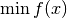
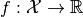
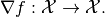

conjugate_gradient_nonlinear¶
-
odl.solvers.smooth.nonlinear_cg.conjugate_gradient_nonlinear(f, x, line_search=1.0, maxiter=1000, nreset=0, tol=1e-16, beta_method='FR', callback=None)[source]¶ Conjugate gradient for nonlinear problems.
- Parameters
- f
Functional Functional with
f.gradient.- x
op.domainelement Vector to which the result is written. Its initial value is used as starting point of the iteration, and its values are updated in each iteration step.
- line_searchfloat or
LineSearch, optional Strategy to choose the step length. If a float is given, it is used as a fixed step length.
- maxiterint, optional
Maximum number of iterations to perform.
- nresetint, optional
Number of times the solver should be reset. Default: no reset.
- tolfloat, optional
Tolerance that should be used to terminating the iteration.
- beta_method{‘FR’, ‘PR’, ‘HS’, ‘DY’}, optional
Method to calculate
betain the iterates.'FR': Fletcher-Reeves'PR': Polak-Ribiere'HS': Hestenes-Stiefel'DY': Dai-Yuan
- callbackcallable, optional
Object executing code per iteration, e.g. plotting each iterate.
- f
See also
odl.solvers.smooth.newton.bfgs_methodQuasi-Newton solver for the same problem
odl.solvers.iterative.iterative.conjugate_gradientOptimized solver for least-squares problem with linear and symmetric operator
odl.solvers.iterative.iterative.conjugate_gradient_normalEquivalent solver but for least-squares problem with linear operator
Notes
This is a general and optimized implementation of the nonlinear conjguate gradient method for solving a general unconstrained optimization problem

for a differentiable functional  on a Hilbert space
 . It does so by finding a zero of the gradient
. It does so by finding a zero of the gradient
The method is described in a Wikipedia article.